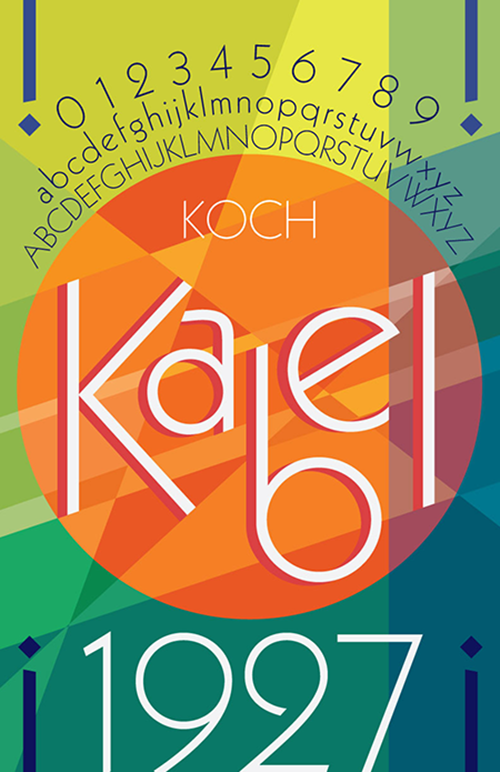

Kabel
Challenge Statement
Choose and conduct basic research on a specific typeface covering its history and usage and design a poster that displays and represents the typeface.
Solution Statement
The typeface that I researched was Kabel. Kabel is a geometric sans serif typeface that was designed in 1927 by Rudolf Koch for the Klingspor Type Foundry, a German type foundry based in Offenbach. The Kabel font today is mostly known to be used for title and logo work and it is notable for the sloping ends and edges of the letters.
I chose to design my poster in a way that accentuates the quirkiness of the typeface, as one can see by the lines that crisscross all throughout the poster design. Said lines all line up and are arranged to fit with the slanted ends of the letters that form the word “Kabel” which emphasizes the diagonal lines that give the Kabel typeface its unique look. The color palette that I chose is also bright and bold to reflect the liveliness that the Kabel typeface embodies.
